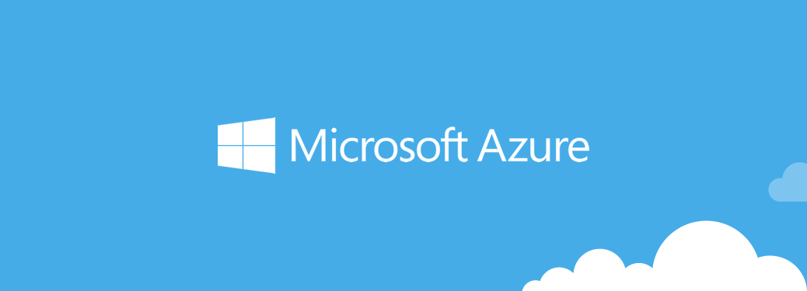

Добро пожаловать!
В этой статье Вы узнаете для чего можно использовать технологию облачных вычислений, и как она работает.
Что это такое?
Общее определение звучит так:
Облачные вычисления (англ. cloud computing) — информационно-технологическая концепция, подразумевающая обеспечение повсеместного и удобного сетевого доступа по требованию к общему пулу (англ. pool) конфигурируемых вычислительных ресурсов (например, сетям передачи данных, серверам, устройствам хранения данных, приложениям и сервисам — как вместе, так и по отдельности), которые могут быть оперативно предоставлены и освобождены с минимальными эксплуатационными затратами или обращениями к провайдеру.
Что же это значит для конечного пользователя?
Технологии облачных вычислений - это всего-лишь способ оптимизировать использование ПК для различных корпоративных задач. Вместо покупки дорогостоящих ПК, подверженных амортизации, вы арендуете серверные мощности у компании, предоставляющей их за определенную фиксированную плату.
Так как у большинства компаний, занимающихся предоставлением данного сервиса существуют разнообразные тарифы, то это решение подходит и для небольших компаний, и для огромных организаций с филиалами в нескольких городах и даже странах.
Как же это использовать?
Давайте рассмотрим, как можно использовать эту технологию. Рассмотрим одного из самых популярных провайдеров - Microsoft Azure.

Официальный сайт Microsoft Azure
Вы также можете получить информацию о Microsoft Azure на нашем сайте
На официальном сайте Azure описано 4 основных примера использования их сервиса:
Веб-приложения - создание и хост веб-приложений на языках C#, HTML 5, PHP, Java, Node.js, Python.
Виртуальные машины - создание ВМ, управляемых ОС Windows Server или ОС на базе Linux для размещения сервера или других задач.
Базы данных SQL - создание самоуправляемой базы данных для хранения данных пользователей Ваших приложений или сайтов, либо для хранения данных Ваших клиентов.
Архивация - архивация серверов прямо в облако, с возможностью полного восстановления в случае проблем.
На практике, с помощью Azure или другого облачного сервиса можно выполнять любые задачи, с которыми может справиться обычный сервер. Полный список продуктов Вы можете получить на сайте Azure.
Безопасно ли это?
Корпорация Microsoft заявляет о полной безопасности своего облака и соответствии международным стандартам.
На мероприятии Cloud Summit в Москве в декабре 2013 управляющим партнёром консалтингового агентства "Емельянников, Попова и партнёры" Михаилом Емельянниковым был сделан доклад по безопасности и конфиденциальности данных, размещаемых на Microsoft Azure, а также подробно разобрано российское законодательство и конкретные статьи, способные повлиять на процесс использования Microsoft Azure.
Михаилом Емельянниковым также был подготовлен отчёт по использованию Microsoft Azure для персональных данных. Вы можете прочитать доклад на нашем сайте или на SlideShare.
Если Вы решили попробовать облачные вычисления на практике, Вы можете получить информацию о провайдерах на CloudComputing.